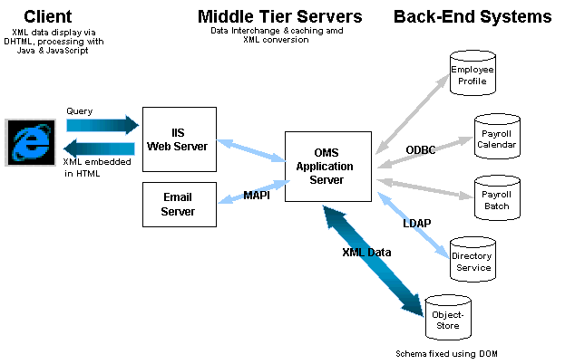

|
| ||
|
| ||
August 11, 1998
The Business Problem
The Role of XML
Solving the Problem with Object Design's ObjectStore and XML
Situation Overview
User Scenario
Behind the Curtain
XML Example
Information Flow Diagram
Siemens' IT organization needs to manage its enterprise, bring applications to the intranet, and support legacy systems. It also needs to integrate data from Payroll, the Microsoft Exchange Directory Service database, and client input. Additionally, it requires that all its applications freely exchange data. Currently, IT administrators are forced to build custom interfaces and maintain a patchwork of homespun data translators and transporters. This results in lost time writing non-value-add code that is prone to bugs and can seldom be reused. The cost of this counter-productivity is skyrocketing, as data sharing becomes a larger part of corporate computing. Also end users are feeling the pinch because of delays in accessing information. Administrators and their customers need a pain-free way to share data between all systems old and new.
Siemens is looking for a system that would allow employees to submit their timecards and let managers approve them online. Each timecard submission and approval has to be tied to basic human resource (HR) data such as name, serial number, and employee type. Timecard validation must depend on pay code rules and frequency tables. Managers need the ability to temporarily delegate approval responsibilities, and the entire system must interface to the corporate-wide Directory Service database, as well as the Payroll system.
With the proliferation of data and the increased need to exchange data, there is a desperate need for a data format that can be shared. XML, which is ASCII-based and self describing, can serve as the data interchange format in a Time and Attendance System. XML enables the integrators to reuse interface code, extend and modify data structures to accommodate personalization and internationalization, and design the system without worrying about limitations imposed by data sources.
Another advantage that XML brings is its extensibility. Data fields can be added without disrupting the existing structure and applications. For example, consider global development and the different holiday schedules of each country. With XML, the developer can use the same pay-period DTD, but just drop in a new holiday attribute. XML makes the localization of an application easy, maximizing code and data model reuse.
With XML and ObjectStore, an ODBMS from Object Design (http://www.odi.com/  ), Siemens was able to develop an application that delivers the functionality needed while fully integrating all legacy systems. The application services 7000 people nationwide, and Siemens expects to realize a $500,000 a year savings due to error reduction, increased productivity, and the elimination of costly data entry centers. This means that the organization can grow without scaling support costs.
), Siemens was able to develop an application that delivers the functionality needed while fully integrating all legacy systems. The application services 7000 people nationwide, and Siemens expects to realize a $500,000 a year savings due to error reduction, increased productivity, and the elimination of costly data entry centers. This means that the organization can grow without scaling support costs.
When an employee submits timecard information, she goes to a personalized Web page. The page shows the weekly schedule that is dynamically generated from the current date, her work status, scheduled vacation time, and weekly hours. When she clicks on a day, a page appears that allows her to select the number of hours worked, days spent on vacation, etc. This page is dynamically generated since different employee types have different classifications for how they account for their time. The Time and Attendance System makes sure that the user is presented with only allowable hourly options. An administrator can add new hour classifications at any time.
Once the employee submits her hours, the manager checks the queue for timecards that are waiting for approval. Based on the manager's profile, the Time and Attendance System gives the manager a summary of all timecards that fall under his jurisdiction. The manager approves, rejects, or drills down for more detailed information on employee's profile, with a click of the mouse. The system generates a notification e-mail message for the employee, including the time of approval or the reasons for rejection.
<!DOCTYPE BATCH SYSTEM>
<BATCH>
<PAYEE SERIAL="000000" FULLNAME="Sample,Patricia C." MANAGER="000000Z"
DEPARTMENT="000000" HIRED="1989-08-01 00:00:00" TERMED="1997-09-29 00:00:00"
STATUS="A" EMAIL="Patricia.Sample@somecompany.com" />
<PAYHRS>
<PAYHR EFFECTIVE="1998-03-15 00:00:00" MANAGER="000000" DEPARTMENT="000000"
EXEMPT="N" STATUS="A" TYPE="RF" SHIFT="1" DAYS="5"
HOURS="40.00" HIRED="1997-09-29 00:00:00" CURRENT="0" />
<PAYHR EXEMPT="N" STATUS="A" TYPE="RF" SHIFT="2" DAYS="5" HOURS="40.00"
EFFECTIVE="1998-04-01 00:00:00" MANAGER="000000" DEPARTMENT="000000"
CURRENT="0" />
<PAYHR EXEMPT="N" STATUS="A" TYPE="RF" SHIFT="1" DAYS="5" HOURS="40.00"
EFFECTIVE="1998-04-15 00:00:00" MANAGER="000000" DEPARTMENT="000000"
CURRENT="1" />
</PAYHRS>
<PAYBALS>
<PAYBAL GROUP="003" HOURS="0.0" EFFECTIVE="1998-04-12 00:00:00" />
<PAYBAL GROUP="006" HOURS="0.0" EFFECTIVE="1998-01-01 00:00:00"
STARTING="1997-12-29 00:00:00" ENDING="1998-12-29 00:00:00" />
<PAYBAL GROUP="007" HOURS="0.0" EFFECTIVE="1998-01-01 00:00:00"
STARTING="1997-12-29 00:00:00" ENDING="1998-12-29 00:00:00" />
<PAYBAL GROUP="008" HOURS="0.0"></PAYBAL>
</PAYBALS>
<PAYCARDS>
<PAYCARD SERIAL="000000" PERIOD="1998-06-07 00:00:00"
FULLNAME="Sample,Patricia C." EMAIL="Patricia.Sample@somecompany.com"
MANAGER="000000" DEPARTMENT="000000" EXEMPT="N" STATUS="A" TYPE="RF"
SHIFT="1" DAYS="5" HOURS="40.00" EFFECTIVE="1998-04-15 00:00:00" />
<PAYCODES>
<PAYCODE CODE="002" PERIOD="1998-06-07 00:00:00" MON="8.0" TUE="8.0"
WED="8.0" THU="8.0" FRI="8.0" SAT="0.0" SUN="0.0" TOTAL="40.0"
SUBMITTED="1998-06-17 10:13:06" SUBMITTER="000000" />
</PAYCODES>
<SUBMITTED DATE="1998-06-17 10:13:06" SERIAL="000000"
FULLNAME="Sample,Patricia C." STATUS="SUBMITTED">
</SUBMITTED>
</PAYCARD>
</PAYCARDS>
</PAYEE>
</BATCH>

Did you find this material useful? Gripes? Compliments? Suggestions for other articles? Write us!
© 1999 Microsoft Corporation. All rights reserved. Terms of use.